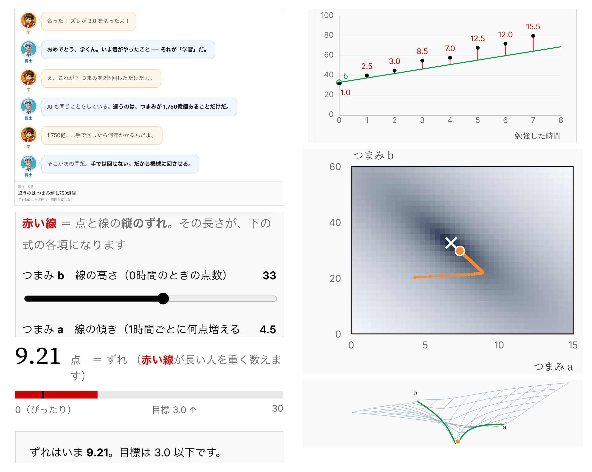

| 章 | 章題 | 中身 | 問 |
|---|---|---|---|
| 1 | 機械学習 | AIが学習するとは、具体的に何をしているのか。数を調整して正解に近づける、その一番小さい形を自分の手で動かします | 1〜5 |
| 2 | 深層学習 | 深層学習の「深い」とは、何が深いのか。層を重ねる意味と、重ねただけではうまくいかない理由を、自分で層を足しながら確かめます | 6〜11 |
| 3 | LLM | ChatGPTは中で何をしているのか。動いているLLMが次に来る語を確率で選ぶしくみと、同じ質問でも答えが変わる理由を、動かして見ます | 12〜14 |
| 4 | LLMはどうやって作られるのか | なぜAIは丁寧に答え、数学は得意で、それでいて自信を持って間違えるのか。次の語を当てる練習、人が選んだ記録で整える、正誤が付く問題で鍛える、という3段に分けて動かします | 15〜17 |
| 5 | 本物のデータでは、何が精度を決めるのか | タイタニック号の乗客891人の記録から、年齢・性別・客室の等級をもとに生死を当てます。Kaggleで最もよく使われる入門課題です。使う道具は決定木です | 18〜21 |
数式は出てきますが、自分で計算する必要はありません。つまみを動かすと、画面がその場で計算します。
中学生でも進められます。微分や対数を習っていれば、なぜそうなるかまで踏み込めます。
博士と高校2年生のやり取りで進みます。 説明を読むのではなく、会話を追っていくと分かる形にしました。
対話形式でわかりやすいAIの入門書も、触って動かせるAIの可視化ツールも、 一問ずつ出題して採点してくれる演習サイトも、すでに世の中にあります。
ただし、3つを兼ねたものは見つかりませんでした。だから作りました。
| 対話形式で読める | 自分で動かせる | 出題され、判定される | |
|---|---|---|---|
| 対話形式の入門書（数学ガールの秘密ノート など） | ○ | × | × |
| AIの可視化ツール（Transformer Explainer など） | × | ○ | × |
| 一問形式・自動採点の演習サイト（Deep-ML など） | × | ○ | ○ |
| Deep Black Box | ○ | ○ | ○ |

読むだけの問題は1つもありません。多くの問題にはつまみ（左右に動かすスライダー）が並んでいて、動かしているのはAIの中身の数値そのもの、つまりパラメータです。つまみのない問題は、ボタンで切り替えたり、3択で先に予想したりする形になります。
AIは難しいので分かりやすく書く必要がありますが、分かりやすくしすぎると正確ではない表現になることがあります。だから機構は原論文32本に紐づけました。原論文から解き明かす生成AIという本で紹介されている原論文32本を参照しています。そして、このゲームのために簡単にした場所は「ここは簡単にしました」と書いてあります。
インストールも環境構築も不要。ブラウザで開くだけ。スマートフォンでもできます。
AIをつくる人を増やすには、原理を学ぶ入口が要ります。
そう考えたのは、国際人工知能オリンピック（IOAI）2025 銅メダリスト・開成高校3年の山井勇人さんです。彼がこの世界を知ったのは高校1年の冬。偶然でした。それから1年たたずにメダルを取っています。足りていなかったのは能力ではなく、知る機会でした。
「AIをどう使うか」はよく語られます。けれど、中で何が起きているかは、あまり教わりません。
六本木ベンチャーキャピタルの「Agora」第1回で、5人とAIが2時間 議論しました。数学や構造の面白さに反応する高校生に、入口を1つ届けるために作ったものです。
Agoraは、突出した若い才能が、AIと深く議論して、まだ世にない新しいものを生み出すプログラムです。